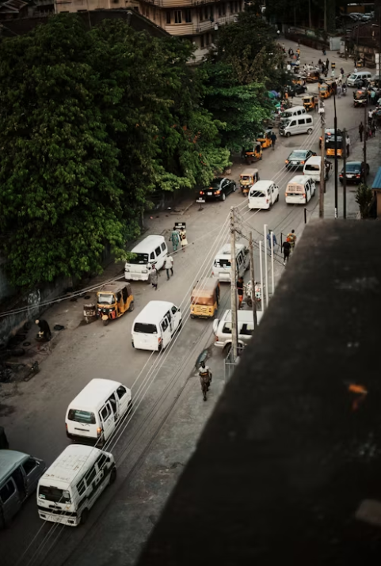

About Lagos
Lagos, Nigeria is a bustling metropolis in West Africa, known for its vibrant culture, impressive economic growth, and diverse population. As the largest city in Nigeria and one of the fastest-growing cities in the world, Lagos serves as the commercial and financial hub of the country, attracting entrepreneurs, investors, and multinational corporations. Despite its rapid urbanization and infrastructure challenges, Lagos has managed to maintain its unique identity through its rich history, music, art, and cuisine.
The city is also a melting pot of various ethnicities, with people from different parts of Nigeria and other countries coexisting harmoniously. Lagos is home to several iconic landmarks, such as the National Museum, Lekki Conservation Centre, and the iconic Lagos Island beaches. With its thriving music and film industry, known as Nollywood, Lagos has become a cultural hotspot in Africa, showcasing the creativity and talent of its residents. In conclusion, Lagos, Nigeria is a dynamic city that offers a blend of traditional and modern lifestyles, making it a fascinating place for both locals and visitors alike.
